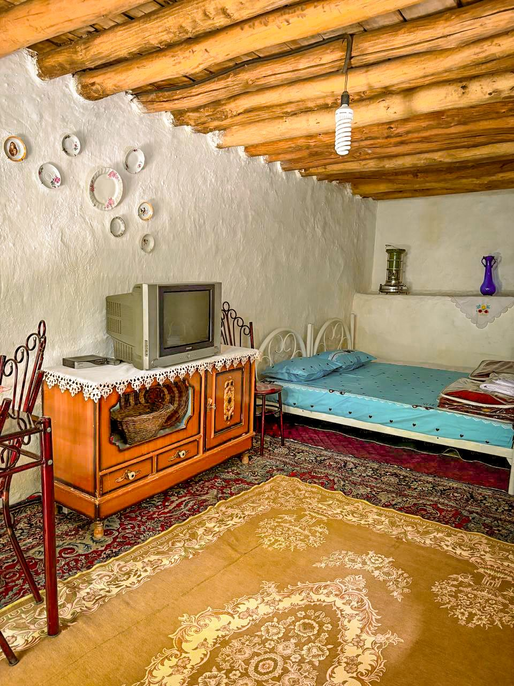
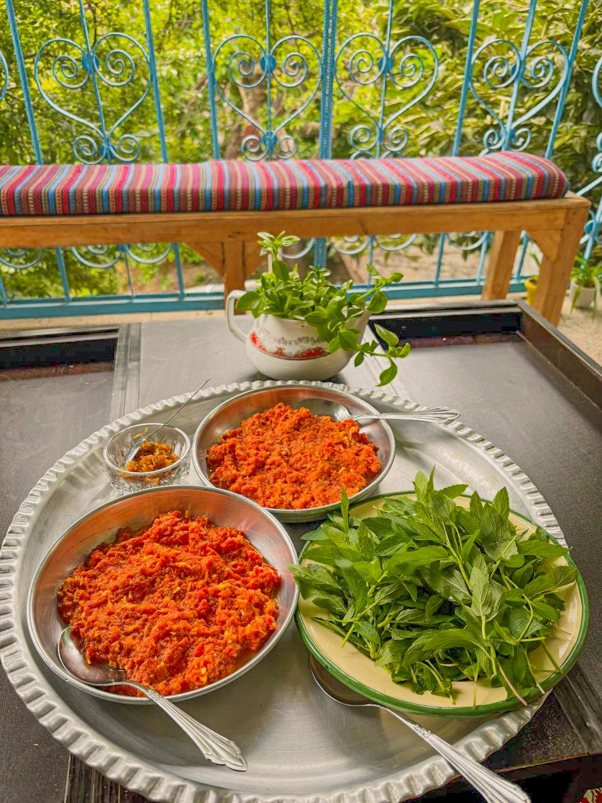
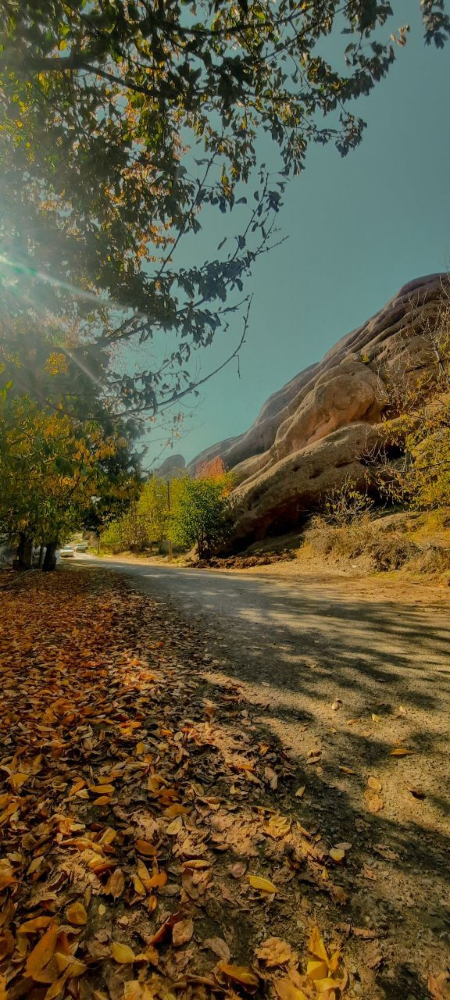
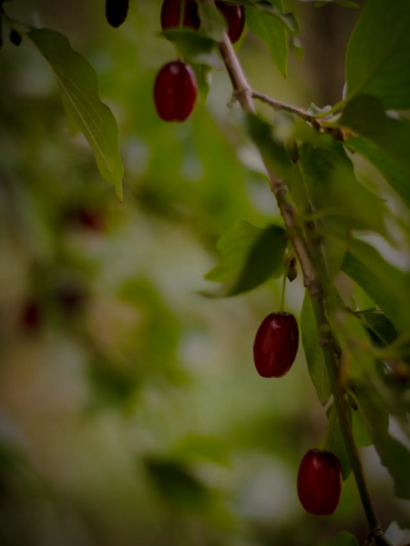
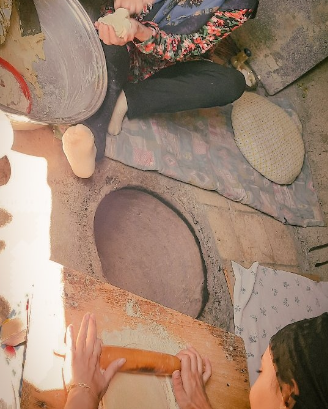
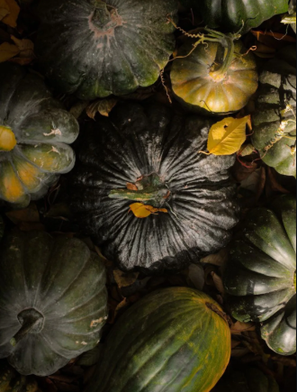
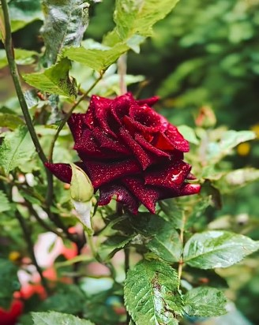
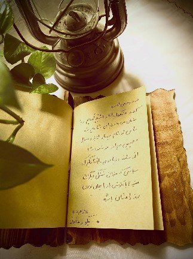

Presented by Detar Eco-Lodge
Guide to Tourist Attractions, Nature, and Sights of the Alamut Region










To navigate and view the exact location of Detar Eco-Lodge, you can use the following links:

Gazorkhan is situated in the heart of East Alamut region and is famous for its mountainous nature, fruit orchards, fresh air, and proximity to Alamut Castle. This village is one of the most important tourist destinations in Qazvin Province.

Alamut Castle, also known as Hassan-i Sabbah Castle, is built atop a high rock and is one of Iran's most famous historical monuments. This fortress served as the headquarters of the Nizari Ismaili state in the 11th century.
From the top of the castle, visitors can enjoy breathtaking views of the Alborz mountain range and the lush valleys of Alamut.
📍 Distance to Detar Eco-Lodge: 5 minutes by car

Garmagloo Valley is one of the lesser-known natural landscapes of the Alamut region. Featuring towering cliffs, diverse vegetation, and pleasant weather, it is an attractive destination for nature enthusiasts and photography lovers.
Its proximity to Gazorkhan allows tourists to visit both Hassan-i Sabbah Castle and the pristine local nature in a short trip.
📍 Distance to Detar Eco-Lodge: approximately 10 minutes by car

Ovan Lake is one of the most beautiful natural lakes in Iran. Nestled among mountains and green plains, it offers unique and stunning views throughout all seasons.
Boating, nature photography, and walking are among the most popular activities for tourists in this area.
📍 Distance to Detar Eco-Lodge: approximately 1 hour by car

Andej is one of the most scenic villages in Alamut, known for its abundant orchards, permanent rivers, and mountainous nature.
This village serves as the starting point for many trekking and mountaineering routes in the area.
📍 Distance to Detar Eco-Lodge: approximately 30 minutes by car

Pich Bon is a lesser-known yet remarkably beautiful area in Alamut. Its mountain vistas, green meadows, and peaceful tranquility make it an excellent destination for nature lovers.
📍 Distance to Detar Eco-Lodge: approximately 1 hour by car

Moallem Kalayeh is the nearest town to Detar Eco-Lodge. Essential services such as gas stations, markets, pharmacies, and banking facilities are available here for tourists.
⛽ Distance to Detar Eco-Lodge: approximately 30 minutes by car
📌 Detar's One-Day Itinerary Suggestion for Alamut
🌄 Morning ← Picnic near the cliffs of Andej
🍽 Noon ← Rest and lunch at the Eco-Lodge
🏰 Afternoon ← Visit Hassan-i Sabbah Castle
If you would like to experience these routes up close, Detar Eco-Lodge is ready to host you.
Every corner of Alamut has a story to tell. Here are some captured memories from Detar's guests.